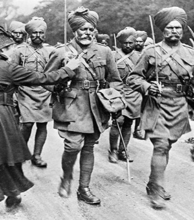
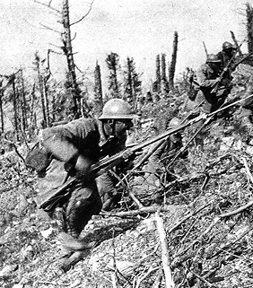
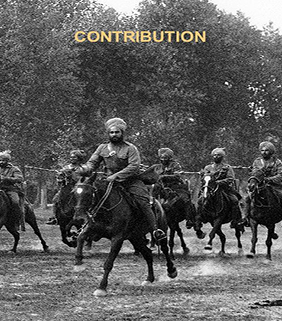
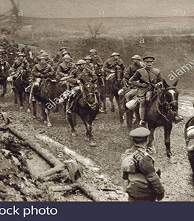
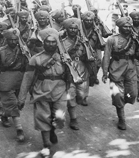
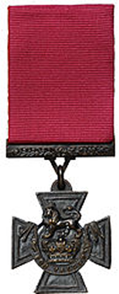

Timeline
The First World War of 1914-1918 was the bloodiest conflict in Canadian history, taking the lives of more than 60,000 Canadians. It erased romantic notions of war, introducing slaughter on a massive scale, and instilled a fear of foreign military involvement that would last until the Second World War.
The War Begins & India Joins
By October 1914, the first Indian soldiers arrived on the Western Front in France, marking their participation in the war. The Indian Army, consisting of nearly 1.3 million troops, played a crucial role in the British war effort, fighting in multiple theaters.
1914
Indian Troops in Heavy Combat
Indian soldiers fought bravely in France, particularly in the Battle of Givenchy (January 1915), where they faced harsh winter conditions and suffered heavy casualties. Indian troops were also involved in the Second Battle of Ypres (April-May 1915), where they experienced Germany's first large-scale use of poison gas.
1915
The Brutality of War Intensifies
The year 1916 saw two of the deadliest battles of the war: the Battle of Verdun (February-December 1916) and the Battle of the Somme (July-November 1916). Indian troops participated in both, particularly in the Somme Offensive, where over 1 million casualties were recorded on both sides.
1916
India Expands Role with U.S.A.
Indian soldiers were increasingly deployed in the Middle East and Africa. They played a crucial role in the Third Battle of Gaza (November 1917) in Palestine, helping British forces advance against Ottoman troops. The Indian Cavalry Brigade was instrumental in capturing key enemy positions.
1917
The End of World War I
The final year of the war saw Germany launching its Spring Offensives (March-July 1918), an aggressive attempt to break through Allied defenses before American forces could fully engage. However, by July 1918, the Allies, including Indian troops, launched a counteroffensive, pushing Germany back.
1918
Victoria Cross
The Victoria Cross is the premier Operational Gallantry award given for "most conspicuous bravery, or some daring or pre-eminent act of valour or self-sacrifice, or extreme devotion to duty in the presence of the enemy.
It may be awarded to all ranks of the services and civilians and can be awarded posthumously.
On this page we list in chronological order the Muslims we are aware of who have been awarded the Victoria Cross.
George Cross
The George Cross is the premier award given for non-operational gallantry or gallantry not in the presence of an enemy.
The George Cross is equal in stature in the UK honours system to the Victoria Cross, the highest military gallantry award. This has always been the case since the introduction of the award in 1940. It may be awarded to all ranks of the services and civilians and can be awarded posthumously.The George Cross is equal in stature in the UK honours system to the Victoria Cross, the highest military gallantry award. This has always been the case since the introduction of the award in 1940. It may be awarded to all ranks of the services and civilians and can be awarded posthumously.
On this page we list in chronological order the Muslims we are aware of who have been awarded the George Cross.